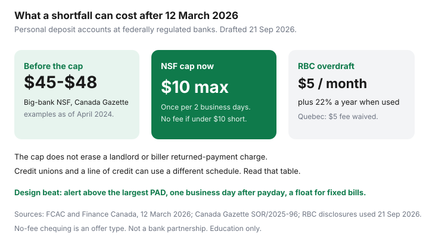

Personal Finance · Canada
How to Stop NSF and Overdraft Fees in Canada: Alerts, Buffers, and Better Account Design
A lot of NSF fees in Canada are a calendar bug. Payroll lands Thursday night, rent’s pre-authorized debit hits Friday morning, and the transfer you meant to make is still a thought. Since 12 March 2026 the bank’s own NSF charge on a personal deposit account at a federally regulated institution is capped at $10, with two extra limits: not more than once in two business days on that account, and no NSF fee when the unauthorized overdraft is under $10. That cap is real money compared with the $45 to $48 the Canada Gazette recorded at the big banks as of April 2024. It does not fix a landlord’s returned-payment charge, and it does not make overdraft protection free. Design the account so the payment clears.
Disclosure: No-fee and low-cost chequing accounts are an offer type. Saving Optimizer may later add partner links. We do not currently claim a bank partnership. This is education, not a fee quote for your account. Read the disclosure booklet you were given.
Key takeaways
- Map every PAD against payday. The expensive pattern is a debit that hits before the deposit posts, not a mysterious bank plot.
- Set the low-balance alert above the largest single PAD, not at $0.
- Keep a small float for fixed bills in its own bucket so savings transfers cannot race rent.
- Federal NSF cap: $10, once per two business days, waived if you are short by under $10, on personal deposit accounts at federally regulated banks, in force 12 March 2026.
- Overdraft protection is a different product. RBC lists $5 a month plus 22% interest when used. Québec residents are spared that $5 fee on RBC’s schedule. The interest can remain.
Map every PAD date against payday so fees are not a timing accident
List rent, insurance, utilities, phone, childcare, loan payments, and the savings skim. Write the day each one actually leaves, not the day you think of as “due.” Then write the day payroll has posted for the last three pays — evening-of, or next morning. If rent’s PAD is the morning of payday, ask the landlord or the biller to move it two business days later, or fund the account the day before from the float. The savings transfer belongs one business day after payroll, which is the mechanic in pay yourself first. A same-morning skim that races rent is how disciplined people pay NSF fees.
Set balance alerts and low-balance rules that actually fire
An alert at $0 arrives with the fee. Set the threshold at the largest PAD plus a cushion — if rent is $2,200, alert at $2,500, not at $100. Turn on push and email. Test it by temporarily setting a high threshold you know you will cross, then put it back. Alerts fail when they go to an old number or to an app you silenced. The point of the alert is a same-day transfer from the float, which only works if the float exists.

Build a small float account dedicated to fixed payments
One bucket holds the fixed PADs. Another holds spending. The emergency HISA is a third thing (where to park it) and should not be the account rent hits. A practical float is one month of those fixed PADs, built by leaving that money behind on payday before any extra savings skim. Digital banks that allow several accounts make the label obvious; the no-fee stack is about ATM access plus a parking sleeve, not about a clever fee. If everything lives in one chequing account, you will spend the rent float at the grocery store and call it a surprise.
| Charge | What is public | What it does not cover |
|---|---|---|
| NSF on a personal deposit account | Max $10 at federally regulated banks from 12 Mar 2026; once per 2 business days; no fee if unauthorized overdraft is under $10 | Credit unions under provincial rules; business accounts; a payee’s own returned-item fee |
| RBC overdraft protection | $5 a month plus 22% a year when used, unless the account already waives the monthly fee | Québec-resident owners: RBC does not charge the $5 monthly fee or the $5 over-limit handling fee. Interest can still apply |
| Low-cost accounts | From 1 Dec 2025, a modernized commitment: accounts at no more than $4 a month at 14 institutions, and $0 for youth, students, GIS seniors, and RDSP beneficiaries | Your current package fee, until you switch or ask |
When overdraft protection costs more than it saves
Protection is useful when a single timing miss would trigger a cascade of biller fees and you have already had that week. It is expensive when you pay $5 every month, all year, and also live in the overdraft at 22%. Twelve months of the RBC monthly fee is $60 before any interest. Interest on a $200 dip for 10 days is only a couple of dollars (200 × 0.22 × 10 / 365 is about $1.20). Interest on a balance you do not repay is a loan. If the pattern is “we spend more than the paycheque,” overdraft is 22% financing plus a fee, and the worksheet you need is the payoff order, not a higher limit. If the pattern is “rent hits six hours early,” move the PAD and keep the $5.
Switch or renegotiate after three NSF hits in a year
Three incidents in twelve months, after the two-business-day stacking rule, means the design is wrong. First ask the bank to reverse a fee when payroll or the bank’s own posting was late. Some will do a first incident. Write down the case number and do not count on a second gift. Then either drop a package you are not using or follow the 14-day switch: open the new account, move payroll, rewrite PADs, wait two billing cycles, then close. Closing first is how you miss a debit and pay the fee you were trying to escape.
Document disputes and fee reversals with your bank
For each hit, save the date, the amount, the originator of the PAD, the balance that morning, and whether a second NSF landed inside two business days after 12 March 2026. That second fee is the one the regulation tells the bank not to charge. Complain to the bank first. If a federally regulated institution will not correct a fee the rule prohibits, FCAC is the supervisor for those NSF requirements. Keep the screenshots. A phone call you cannot describe later did not happen.
Sources & date stamps
- Department of Finance Canada and FCAC — NSF cap of $10 in force 12 March 2026; once per two business days; no NSF fee when the unauthorized overdraft is under $10; personal deposit accounts (releases used 21 Sep 2026).
- Canada Gazette, SOR/2025-96 — cap text and the April 2024 big-bank NSF examples of $45 to $48.
- RBC personal-deposit disclosures — overdraft protection $5 a month plus 22% interest; Québec fee waiver on the $5 charges; NSF listed at $10 (booklet and service pages used 21 Sep 2026).
- Finance Canada — modernized low-cost and no-cost accounts in place 1 December 2025, at no more than $4 a month, at 14 federally regulated institutions.
Frequently asked questions
What is the NSF fee cap in Canada?
From 12 March 2026, a federally regulated bank may charge at most $10 when a personal deposit account cannot cover a payment. It may not charge another NSF fee on that account within two business days, and it may not charge an NSF fee when the unauthorized overdraft is under $10. FCAC oversees the rule. It does not automatically cover provincially regulated credit unions, business accounts, or every fee on a line of credit.
Does overdraft protection fall under the same $10 cap?
No. Overdraft protection is a separate service. RBC's public disclosure, reviewed 21 Sep 2026, lists $5 a month plus 22% a year interest when the service is used, on accounts that do not already include the monthly fee. Quebec-resident owners are not charged that $5 monthly fee or the $5 item-handling fee for exceeding the limit. Interest can still apply.
What if my landlord also charges a returned-payment fee?
The federal cap limits the bank's NSF charge on a personal deposit account. A landlord, gym, or utility can still add whatever their contract allows. Fixing the bank fee does not erase the biller's fee. Move the PAD date or fund the float so the payment clears.
When should I switch banks over fees?
After the calendar is fixed, if the account still charges a package fee you do not use, or if three separate NSF incidents in a year were timing rather than a one-off payroll glitch. The switch sequence is open the new account first, overlap two billing cycles, then close. Ask once for a reversal when the cause was a bank or payroll posting error. Do not budget on getting it.
Is a no-fee account an affiliate deal on this page?
No-fee and low-cost chequing is an offer type. From 1 December 2025, 14 federally regulated institutions committed to accounts at no more than $4 a month, and $0 accounts for specified groups including GIS seniors and students. We do not claim a bank partnership. Compare the fee schedule you would actually sign.